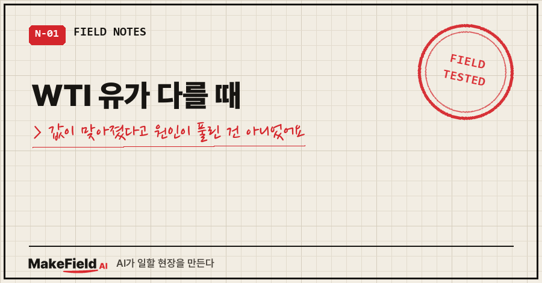
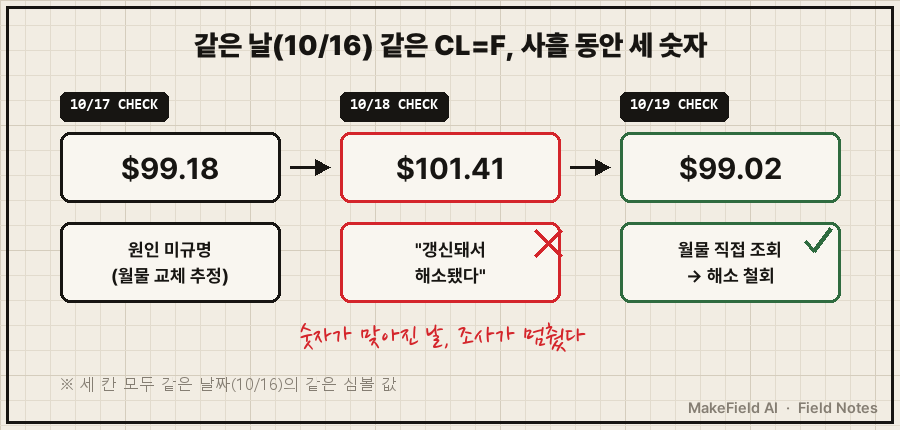
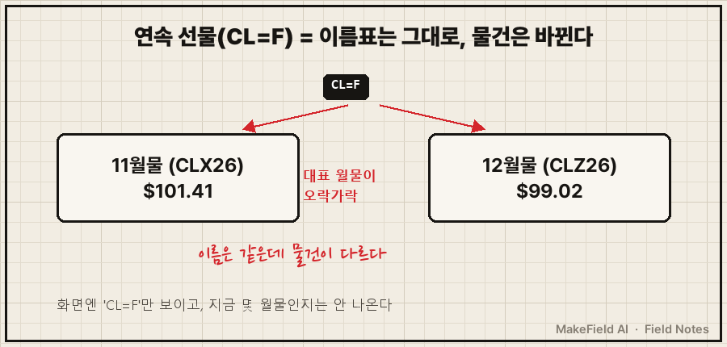
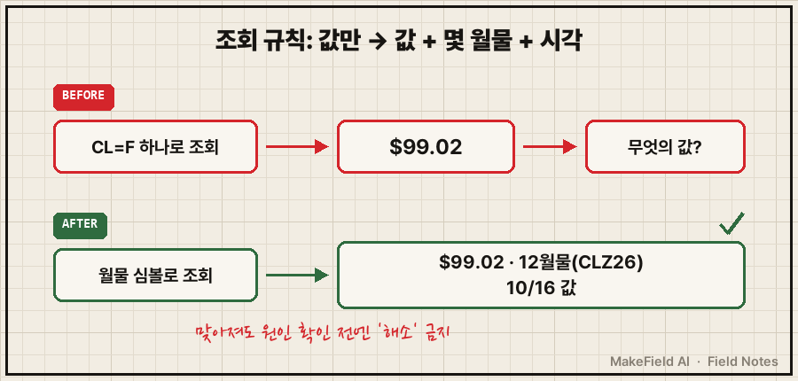

WTI 유가 다를 때 제일 먼저 볼 곳은 출처가 아니라 그 숫자가 몇 월물 값인가예요.
같은 날 같은 유가를 AI가 사흘 동안 $99.18, $101.41, $99.02로 바꿔 적었는데, 데이터가 틀린 날은 하루도 없었습니다.
야후 파이낸스의 CL=F 같은 연속 선물 심볼은 '대표 월물'의 값을 보여줄 뿐이라, 대표 월물이 바뀌면 같은 날짜의 가격도 다른 숫자로 나옵니다. 제 경우 10월 16일 하루에 11월물은 $101.41, 12월물은 $99.02였어요.
현장에서 센서 값이랑 씨름한 지 열다섯 해째인 엔지니어입니다.
퇴근 후엔 AI가 새벽마다 시장 요약을 한 장씩 만들어 두게 해 놓고 공부용으로 읽어요.
이번 이야기는 그 리포트가 맞는 답을 첫날 짚어 놓고, 둘째 날 스스로 덮어 버린 기록이에요(2026년 10월 기준).
1. 첫날, AI는 정답 근처를 짚어 놓고 '추정'으로 남겼어요
10월 17일 리포트 유가 칸에 이런 줄이 붙어 있었어요.
WTI $101.41 (정산) ※Yahoo CL=F는 $99.18 — 약 2.2달러 차이, 원인 미규명(월물 교체 추정)뉴스가 전한 정산가와 AI가 조회한 데이터가 2달러 넘게 벌어진 거죠.
그리고 괄호 안에 월물 교체 추정이라고 적어 뒀어요. 지금 보면 그게 정답이었습니다.
문제는 추정으로 끝났다는 거예요.
그날 CL=F 값은 미국 장 마감 한 시간쯤 전의 장중 스냅샷이었어요. 원인 칸엔 '미규명'이 남았고, 확인은 다음 날로 넘어갔습니다.
월물별 값을 직접 한 번만 찍어 봤어도 그날 끝났을 문제였죠..
2. 둘째 날, 숫자가 맞아지자 AI가 "해소됐다"고 썼어요
10월 18일엔 같은 CL=F가 10월 16일 값을 $101.41로 보여줬어요. 뉴스 정산가와 딱 일치하죠.
AI는 리포트에 이렇게 결론을 냈습니다.
어제 «원인 미규명»으로 적은 WTI 경로 차이는,
Yahoo 일봉이 정산가 $101.41로 갱신되며 해소됐습니다(장중 실시간 값만 달랐음).그럴듯하잖아요? 장중엔 다르고 마감 뒤엔 확정값으로 바뀐다, 읽는 사람이 고개를 끄덕이기 딱 좋은 설명이에요.
그리고 숫자가 맞아진 순간 원인 조사도 거기서 멈췄습니다.

현장에서 이걸 보면 바로 알아요. 알람이 꺼졌다고 원인이 사라진 게 아니다.
센서 값이 정상 범위로 돌아왔다고 조사를 닫으면, 그 센서는 다음에 또 같은 장난을 칩니다.
그 습관을 정작 제 리포트에선 안 쓰고 있었던 거예요.
3. 셋째 날, 같은 날짜가 다시 $99.02가 됐어요
10월 19일, 같은 CL=F가 같은 10월 16일을 또 다르게 보여줬어요. $99.02.
이번엔 AI가 월물 심볼을 하나씩 직접 조회했습니다.
| 조회한 심볼 | 무엇의 값인가 | 10/16 값 |
|---|---|---|
| CL=F | 연속 선물(대표 월물 — 어느 달인지 안 알려줌) | $99.18 → $101.41 → $99.02 |
| CLX26 | WTI 11월물 | $101.41 |
| CLZ26 | WTI 12월물 | $99.02 |
답이 바로 나왔어요. 11월물이 $101.41, 12월물이 $99.02.
원인은 '갱신'이 아니라 CL=F의 대표 월물이 11월물과 12월물 사이를 오간 것이었어요.
첫날의 추정이 맞았고, 둘째 날의 "해소"가 틀렸던 거죠.

그날 리포트엔 정정이 이렇게 실렸어요.
어제의 «해소» 판단은 틀렸고 철회합니다. 정산가 $101.41(11월물) 자체는 맞습니다.용어 하나만 풀고 갈게요.
선물은 "몇 월에 인도할 원유"처럼 월물마다 따로 거래되는 상품이에요. 월물마다 만기가 있어서, 사이트들은 그중 하나를 골라 연속 선물이라는 이름으로 이어 붙여 보여줍니다.
그 하나가 어느 달인지는 화면에 잘 안 나와요.
4. 그래서 조회 규칙을 이렇게 바꿨어요
규칙은 "더 조심하자"가 아니라 조회 방식 자체를 바꾸는 쪽으로 넣었어요.
- 유가는 연속 심볼(CL=F, BZ=F) 대신 월물 심볼로 직접 조회한다.
(CLX26 · CLZ26 · BZZ26 · BZF27 형식)
- 숫자마다 '몇 월물, 어느 시각 값'인지 붙여 적는다.
- 값이 맞아져도 원인을 확인하기 전엔 '해소'라고 쓰지 않는다.같은 날, 같은 원리로 다음 함정도 미리 적어 뒀어요.
같은 날 브렌트유 12월물은 $109.86, 1월물은 $106.82였어요. 대표 월물이 1월물로 넘어가는 날엔 유가가 하루 만에 약 $3 내린 것처럼 보일 수 있다는 뜻이죠.
가격이 변한 게 아니라 진열대의 물건이 바뀐 겁니다. 브렌트 12월물의 정확한 만기일은 아직 확인 전이라 여기선 날짜를 적지 않을게요.

예전에 같은 리포트에서 장중가와 정산가를 섞어 적은 일로 기준 시각 라벨을 붙인 적이 있어요(→ https://blog.naver.com/makefield_ai/224385171404). 그때가 "언제의 값이냐"였다면, 이번엔 "무엇의 값이냐"였습니다.
여러분이 보는 유가 화면엔 몇 월물인지 적혀 있나요?
남는 질문 두 가지
Q. WTI 유가 다를 때 어느 숫자가 맞는 건가요?
둘 다 맞을 수 있어요. 제 경우 $101.41은 11월물 정산가, $99.02는 12월물 값이었습니다. 뉴스가 "WTI 정산가"라고 할 땐 보통 가장 가까운 월물을 말하니까, 비교할 땐 월물부터 맞추세요.
Q. 대표 월물은 언제 바뀌나요?
거래소 규격상 WTI(CL) 선물은 인도월 전달 25일 기준으로 영업일 3일 전에 거래가 끝나요(25일이 영업일이 아니면 4일 전). 다만 사이트마다 연속 심볼을 언제 다음 월물로 넘기는지는 다를 수 있고, 제가 본 것처럼 며칠 사이 오가는 경우도 있었어요. 그래서 날짜를 외우기보다 월물 심볼로 직접 찍는 쪽을 골랐습니다.
AI가 낸 결론이 그럴듯할수록 한 번 더 들여다봐야 한다는 걸, 이번엔 2달러짜리 차이로 배웠어요.
숫자를 끝까지 따라가 본 다른 기록들은 makefield.ai에서 이어서 읽으실 수 있어요.
출처
- CME Group, Light Sweet Crude Oil(CL) Futures 계약 규격 — 거래 종료: 인도월 전달 25일 기준 영업일 3일 전(25일이 비영업일이면 4일 전). 검색 결과 요약으로 확인, 공식 페이지는 작성 시점 접속 시간 초과로 원문 미열람 → https://www.cmegroup.com/markets/energy/crude-oil/light-sweet-crude.contractSpecs.html
- 실측: 2026-10-17~19 개인 학습용 새벽 시장 리포트의 유가 조회 기록(야후 파이낸스 차트 API, CL=F·CLX26·CLZ26·BZZ26·BZF27). 투자 권유 아님
태그: #WTI유가다를때 #WTI유가 #연속선물 #월물교체 #선물롤오버 #CL=F #야후파이낸스유가 #유가데이터조회 #브렌트유 #AI리포트정정 #AI숫자검증 #AI오답노트 #파이썬자동화 #AI자동화 #MakeFieldAI